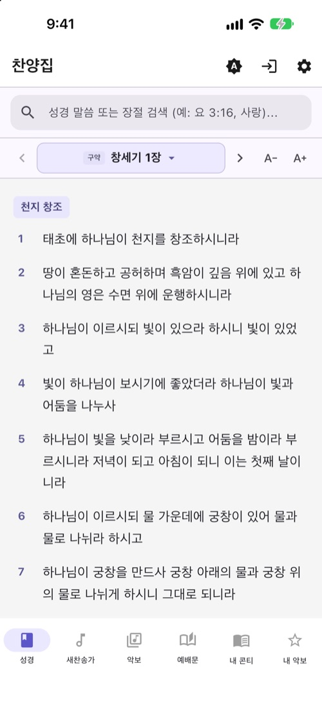
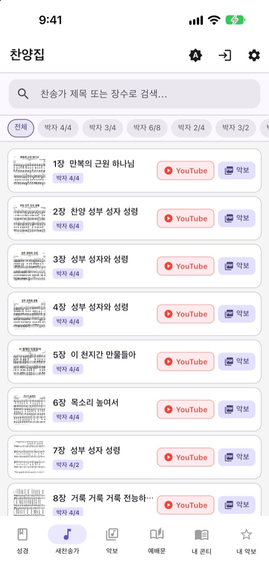
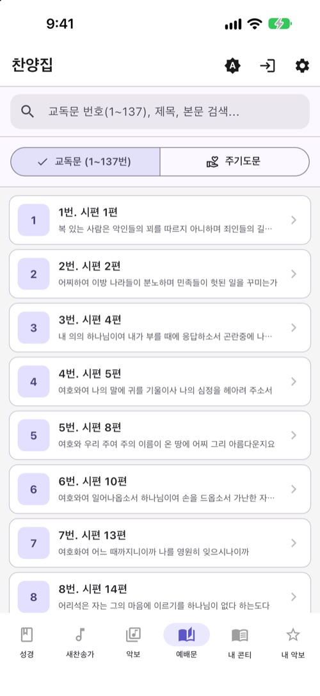

개발 기간: 2026.07 (개인 프로젝트, 1인 개발) 플랫폼: Android (Google Play Store 비공개 테스트) / iOS (시뮬레이터 구동 검증) 저장소:github.com/herjy6372/randomtravel ↗ 패키지명: com.terablack.randomtravel 현재 버전: 1.0.0+1
💡 1. 프로젝트 소개
"한국 랜덤여행" 은 다음 여행지를 고민하는 대신, 대한민국 지도에 다트를 던져 무작위 시·군·구를 여행지로 정해주는 Flutter 앱입니다.
지도 아래(제주도 밑) 발사대를 꾹 누르면 다트가 룰렛처럼 회전하고, 손을 떼면 포물선을 그리며 전국 어딘가로 날아가 꽂힙니다. 방향과 세기를 사용자가 정하지 않도록 한 것이 핵심으로, "랜덤"이라는 취지를 그대로 살렸습니다. 착지한 지역의 특산물·가볼 만한 곳과 우리집에서의 거리를 보여주고, 마음에 들면 여행 계획으로 저장할 수 있습니다.
🛠 2. 사용 기술 및 개발 환경 (Tech Stack)
분류
기술
언어
Dart
프레임워크
Flutter (Material 3)
지도 렌더링
CustomPainter, 통계청 행정경계 GeoJSON (시도 17 · 시군구 250)
상태 관리
Provider (ChangeNotifier)
로컬 저장
Hive, hive_flutter
인증 / DB
Firebase Auth (Google 로그인), Cloud Firestore
콘텐츠 데이터
시군별 특산물·명소 JSON (Gemini 참고 정리)
배포
Google Play Console (비공개 테스트), GitHub Pages (개인정보처리방침)
우리집에서의 거리: 거주지(시·군·구)를 설정하면 하버사인 공식으로 직선거리를 계산하고 "당일치기 딱 좋아요", "1박 2일 떠나볼까요" 같은 문구로 안내합니다.
여행 기록 · 계획: 뽑은 여행지를 저장하고 상태(아이디어·갈 예정·다녀옴), 방문일, 몇 박 며칠, 메모를 기록합니다.
Google 로그인 · 클라우드 저장: 로그인한 사용자별로 Firestore에 기록을 저장해 기기를 바꿔도 유지됩니다.
사용 설명서 · 개인정보처리방침: 앱 안에서 사용법을 안내하고, 처리방침은 GitHub Pages로 공개했습니다.
🗺 지도 그리기와 착지 판정
GeoJSON 폴리곤을 위경도 → 월드 좌표(x = 경도 × cos(중간 위도), y = −위도)로 한 번만 변환해 Path로 만들어 두고, 화면 크기에 맞추는 확대·이동은 캔버스 변환(MapFit)으로 처리합니다.
정적인 지도는 RepaintBoundary 안의 KoreaMapPainter로, 움직이는 다트는 별도의 DartOverlayPainter로 나눠 다트 애니메이션 중 지도를 다시 그리지 않도록 했습니다.
착지 지점은 Ray casting 방식의 점-폴리곤 판정(구멍 있는 폴리곤은 even-odd 규칙)으로 육지(어느 시군구) · 북한 · 바다를 구분합니다.
🪵 4. 아키텍처 및 시스템 구조
UI (MapGame · Result · Records · Settings · Login)
│ Provider 로 AppState 구독
▼
AppState (ChangeNotifier)
├─ GeoData : GeoJSON 파싱 · 투영 · 착지 판정 · 랜덤 지점 생성
├─ SpecialtyRepository : 광역시 / 도-시군 / 도 단위 특산물·명소 조회
├─ AuthService : FirebaseAuthService ↔ LocalAuthService(폴백)
└─ RecordStore : FirestoreRecordStore ↔ HiveRecordStore(폴백)
▼
Animation
└─ DartGameController : idle → charging → flying → landed 상태 머신
인터페이스 기반 교체: 인증과 기록 저장소를 추상 인터페이스로 두어, Firebase 초기화에 실패하면 로컬 모드(Hive)로 자동 폴백합니다.
상태 머신 애니메이션: 다트의 단계별 상태를 컨트롤러 하나에 모으고, AnimationController가 매 프레임 비행 진행도를 넘겨 포물선 높이와 진행 방향을 계산합니다.
🧩 5. 문제 해결 과정 (Troubleshooting)
1) 다트가 바다나 북한에 떨어지던 문제
문제: 화면의 임의 좌표로 다트를 날리면 지도 면적의 상당 부분이 바다·북한이라 갈 수 없는 곳이 자주 뽑혀, 여행지를 정한다는 목적에 맞지 않았습니다.
해결: 착지 결과를 먼저 뽑도록 순서를 바꿨습니다. 250개 시군구 중 하나를 고르고, 그 지역의 경계 상자 안에서 점을 뽑아 실제 폴리곤 안에 들어오는 점만 채택합니다(실패 시 중심점). 이후 그 지점의 화면 좌표로 다트를 발사합니다.
검증: 시드를 고정한 200회 랜덤 테스트에서 모든 결과가 육지이고, 반환된 점이 해당 시군구 안에 있는지 확인했습니다.
2) 다른 지역의 명소가 섞여 나오던 문제
문제: 명소를 도 단위로 묶으면 구미시에 떨어져도 경주 불국사가 나오고, 시군명만으로 찾으면 강원 고성군과 경남 고성군처럼 이름이 같은 지역이 구분되지 않습니다.
해결: 데이터를 광역시(시도 코드) / 도-시군(시도 코드로 감싼 시군명) / 도 대표 특산물 3단계로 재구성했습니다. 명소는 착지한 시군 것만 보여주고, 특산물은 시군 데이터가 없을 때만 도 단위로 대체합니다. 포항시남구 → 포항시처럼 자치구가 나뉜 시는 같은 시도 안에서만 이름 앞부분으로 매칭합니다.
3) 행정구역 변경 반영
2023년 대구광역시에 편입된 군위군은 광역시 대표 명소 대신 군 자체 명소(화본역 등)를 우선 보여주도록 처리했습니다.
강원·전북 특별자치도 명칭과 광주·전남 통합 표기를 시도 코드 기준으로 정규화하되, 명소 조회는 원래 코드(24·36)로 분리해 섞이지 않게 했습니다.
서울시청·구미시청·평양·서해 좌표 등으로 착지 판정을, 지역별 조회 규칙은 단위 테스트로 검증했습니다.
📈 6. 성과 및 회고
지도 SDK 없이 GeoJSON과 CustomPainter만으로 지도를 그리면서 좌표 투영, 점-폴리곤 판정, 렌더링 분리 같은 기초를 직접 구현해볼 수 있었습니다.
"방향과 세기를 정하지 않는 다트"처럼 기능보다 앱의 취지에 맞는 인터랙션을 먼저 정하고, 기술 구조를 그 경험에 맞추는 과정을 경험했습니다.
AI(Gemini)로 정리한 콘텐츠 데이터는 출처를 앱 안에 명시하고, 지역 매칭 규칙은 테스트로 고정해 데이터가 늘어나도 잘못된 추천이 나오지 않도록 했습니다.
다음 단계
시군별 명소·특산물 데이터 보강 (현재 일부 지역은 "준비 중" 안내)
다녀온 여행지를 지도 위에 색칠해 보여주는 여행 지도 기능
🏃♂️ 루티니 (Routiny) — 건강 데이터 연동 루틴·컨디션 트래커
개발 기간: 2026.11 ~ 진행중 (개인 프로젝트, 1인 개발) 플랫폼: Android (Google Play Store 비공개 테스트) / iOS (실기기 구동 검증) 패키지명: com.terablack.routiny 현재 버전: 1.0.3+8
💡 1. 프로젝트 소개
"루티니" 는 삼성 헬스·애플 건강에 쌓인 걸음 수·운동 거리·체중을 자동으로 불러와, 오늘의 운동 루틴 달성 여부와 수면·컨디션을 한 화면에서 기록하는 루틴·컨디션 트래커 Flutter 앱입니다.
사용자가 직접 숫자를 입력하지 않아도 이미 기기에 쌓인 건강 데이터를 활용하도록, Android Health Connect와 iOS HealthKit을 하나의 서비스로 통합하는 것을 핵심 목표로 잡았습니다. 수면 시간·컨디션·운동량을 조합해 온디바이스로 오늘의 페이스 코칭 점수와 추천 페이스도 제공합니다.
🛠 2. 사용 기술 및 개발 환경 (Tech Stack)
분류
기술
언어
Dart, Kotlin, Swift
프레임워크
Flutter
건강 데이터
health (Health Connect / HealthKit), permission_handler
권한 추가에 맞춰 Play Console 건강 앱(Health Connect) 권한 신고를 갱신하고, 권한별 사용 목적을 실제 기능과 일치하게 작성했습니다.
버전 코드 중복으로 업로드가 거부되어 버전을 1.0.2+7로 올리고, 업로드 키 서명과 병합 매니페스트의 권한 포함 여부를 확인한 뒤 다시 빌드했습니다.
4) 아이디 찾기 인덱스의 개인정보 노출 위험 제거
발견: 저장소 공개 전 보안 점검에서, 로그인 전 '아이디 찾기'를 위해 account_lookup 컬렉션을 allow read: if true로 열어 둔 것을 확인했습니다. Firestore 규칙은 "이름·생년월일이 일치할 때만 조회"를 강제할 수 없어, 공개 API 키만으로 전체 회원의 아이디·이메일·이름·생년월일을 조회할 수 있는 구조였습니다.
판단: Spark(무료) 요금제에서는 서버 함수(Cloud Functions)로 가려진 아이디만 돌려주는 방식을 쓸 수 없고, 이름·생년월일은 추측이 쉬워 해시 키 방식도 완전한 보호가 되지 않는다고 판단했습니다.
해결: 보안 규칙을 본인만 읽고 쓰도록 잠그고, 아이디 찾기 기능을 제거해 비밀번호 재설정 메일만 남겼습니다. 새 버전은 로그인 시 예전에 저장된 본인 인덱스 문서를 삭제하며, 로그인하지 않은 요청이 403으로 거부되는 것을 확인했습니다.
📈 6. 성과 및 회고
건강 데이터 연동은 플랫폼마다 데이터 타입·권한 모델·심사 기준이 달라, 플러그인 내부 동작까지 확인해야 원인을 찾을 수 있다는 점을 배웠습니다.
권한은 "실제로 쓰는 것만 읽기 전용으로" 선언하는 원칙을 지키되, 플러그인이 함께 요구하는 권한까지 매니페스트·스토어 신고·개인정보처리방침에 일관되게 반영해야 했습니다.
Android 15/16 대응(targetSdk 36, Edge-to-Edge), 의료기기 오인 방지 면책 문구, 개인정보처리방침 페이지 공개 등 스토어 심사 요건을 개발 단계에서 함께 준비했습니다.
교육 과정: 2026 경북게임개발사관학교 기초역량함양과정 프로그램: AI 바이브코딩 기반 웹 미니게임 개발 플랫폼: PC·모바일 웹
프로젝트 소개
교육 과정에서 ChatGPT Codex를 활용한 AI 바이브코딩으로 제작한 카드 짝 맞추기 웹 미니게임입니다. 카드 두 장을 뒤집어 같은 그림을 찾으며, 캐릭터의 응원과 함께 50라운드에 도전합니다.
주요 기능
쉬움·보통·어려움 선택과 5라운드마다 늘어나는 카드 수
짝 맞추기 점수와 남은 시간 보너스를 합산한 최종 기록
Firebase 익명 인증과 Firestore를 이용한 난이도별 실시간 공유 순위
로컬 기록 보관, 연결 복구 시 동기화와 중복 제출 방지
캐릭터 반응, 배경음·효과음 설정, 모바일 터치와 키보드 입력
개발 과정
카드 뒤집기·짝 판정·타이머·라운드 진행의 기본 흐름 구현
난이도별 제한 시간과 단계적인 카드 수 증가 적용
Firebase 연동으로 점수 저장과 실시간 순위 동기화 구현
서버 규칙으로 비정상 점수·시간과 연속 제출 제한 보강
터치·화면 회전·반응형 화면과 게임·소리 동작 검증
GitHub Pages와 Firebase Hosting에 배포
사용 기술과 배운 점
HTML·CSS·JavaScript, Firebase Authentication, Cloud Firestore, GitHub Actions를 사용했습니다. ChatGPT Codex와 함께 기능을 구체화하고 코드를 구현·검증하며, 게임 상태 관리부터 데이터 저장과 배포까지 연결했습니다.
무료 요금제의 서버 규칙으로 기록의 일관성과 제출 간격을 검증합니다. 정상 범위 안에서 꾸민 기록을 완전히 판별하는 서버 플레이 검증은 구현 범위에 포함하지 않았습니다. 모바일 검증은 브라우저의 터치·화면 크기 모사 환경에서 진행했습니다.
권한 매핑을 모델 레이어에 집중:UserRole enum이 canSync / canUsePro / canUseBeta / canEditAnnouncements / canManageUsers 같은 getter로 등급-기능 매핑을 캡슐화 — 화면마다 권한 체크 로직을 흩어놓지 않고 role.canSync 한 줄로 판단
도메인별 Repository 분리: 할 일·가계부·기분·프로필·테마·언어·세계시각·공지·보호자동의를 각각 독립된 Repository로 분리해, 로컬 저장(SharedPreferences)과 Firebase 연동을 도메인 단위로 관리
📈 5. 성과 및 회고
기능이 하나둘 늘어나는 개인 프로젝트 특성상, 등급 체계를 코드 전역에 흩어놓지 않고 모델 레이어(UserRole)에 모아 새 기능 추가 시 권한 로직 누락 위험을 줄이는 구조를 설계·적용했습니다.
할 일 관리를 중심으로 가계부·기분 기록·타이머 등 서로 다른 도메인을 하나의 앱으로 묶으면서도, 도메인별 Repository 분리로 각 기능의 독립성을 유지했습니다.
향후 계획: Google Play 비공개 테스트 결과를 반영한 정식 출시, 등급별 기능을 활용한 프로 플랜 확장 검토.
🔧 6. 추가 업데이트 및 보완 내역 (v1.5.2+35) 펼쳐 보기
🔐 1) 앱 실행 시 인증 세션 복원 및 비로그인 UX 개선
초기 로그인 세션 복원 타이밍 보완 (auth_repository.dart)
앱 시작 시 FirebaseAuth 로컬 세션 복원이 완료되기 전에 currentUser가 null로 평가되어 비로그인 상태로 보이는 문제를 해결하기 위해 authStateChanges().first 대기 로직 적용
사용자가 명시적으로 로그아웃(signOut)하지 않은 상태에서 토큰 만료 등으로 세션이 풀린 경우 GoogleSignIn.signInSilently()를 통해 자동 복구하도록 개선
비로그인 상태 진입 동선 개선 (permission_service.dart, home_screen.dart, rounded_menu_button.dart)
최초 설치 시에만 로그인 화면을 띄우던 기존 방식에서, 비로그인 상태로 앱을 실행할 때마다 로그인 화면으로 안내하도록 개선
홈 화면의 비로그인 안내 배너 및 비활성화된 하단 메뉴 탭 시 로그인 화면(또는 Pro 등급 신청 안내)으로 즉시 이동하도록 연결
로그인 직후 온보딩 자동 연동 및 스트림 중복 구독 방지 (home_screen.dart, profile_repository.dart)
로그인 상태가 변경되는 즉시 온보딩 완료 여부를 자동 확인하도록 연결
ProfileRepository.init()에서 인증 리스너 중복 호출로 인한 스트림 구독 누수를 방지하고, 오프라인/네트워크 지연 환경에서도 앱 초기 구동이 멈추지 않도록 타임아웃 및 실시간 스냅샷 구독 순서 개선
이용 제한 / 만 14세 미만 승인 대기 화면 동선 보완 (home_screen.dart, onboarding_screen.dart)
승인 대기 화면과 이용 제한 화면에서 다른 계정으로 전환하거나 보호자 동의를 재신청할 수 있도록 보호자 정보 다시 입력(재신청), 설정, 로그아웃 버튼 추가
☁️ 2) 클라우드 동기화 · 알림 · 테마 동작 안정화
자동 동기화(Auto Sync) 및 삭제 동기화 버그 수정 (sync_service.dart)
할 일·기분·가계부 데이터 변경 시 2초 디바운스(Debounce) 기반 자동 백업이 동작하도록 리스너 연결
로컬에서 삭제한 항목이 백업(syncNow) 시 클라우드의 이전 데이터와 병합되어 다시 살아나던 문제를 수정하고, 로컬에 없는 원격 문서도 배치 삭제되도록 _batchSet 로직 보완
데이터 복원 시 일일 비서 알림 유지 (todo_repository.dart, main.dart)
TodoRepository.replaceAll() 실행 시 cancelAll()로 인해 일일 비서 알림(아침·점심·저녁·잠자리·주간 요약)까지 모두 취소되던 문제를 수정하여 개별 할 일 알림만 취소하도록 변경
할 일·기분·가계부 변경 시 일일 비서 알림 문구가 최신 상태로 자동 갱신되도록 리스너 연결
권한 변경 시 테마 폴백 및 Pro 안내 정합성 개선 (main.dart, home_screen.dart, pro_request_screen.dart, parent_consent_repository.dart)
비로그인 또는 일반 등급으로 전환 시 Pro 전용 커스텀 테마(고양이·강아지·기린·커피)가 시스템 테마로 즉시 폴백되도록 처리
Pro 신청 화면에서 Beta 등급도 Pro 혜택 보유자로 인식하도록 수정하고, 보호자 동의 신청·승인·거절 시 관리자 및 사용자에게 앱 내 알림이 발송되도록 보완
🛡 3) 보안(Security) 강화 및 회원 탈퇴 데이터 완전 정리
Firestore 보안 규칙 권한 상승 차단 (firestore.rules)
일반 사용자가 본인 users/{uid} 문서의 role(등급)이나 disabled(계정 정지 여부) 필드를 임의로 수정할 수 없도록 권한 상승(Privilege Escalation) 취약점 차단
만 14세 미만 사용자의 보호자 동의 재신청(parent_consents/{uid} 업데이트) 및 회원 탈퇴 시 본인 데이터 삭제가 정상 허용되도록 보안 규칙 보완
회원 탈퇴 시 개인정보 완전 삭제 및 프로필 수정 버그 수정 (profile_repository.dart)
프로필 사진을 기본 이미지로 초기화할 때 휴대폰 번호(phoneNumber)와 국가 코드(countryCode)가 유실되던 버그 수정
회원 탈퇴(deleteAccount) 시 Google 재인증을 먼저 수행해 requires-recent-login 오류로 인한 부분 삭제 상태를 방지하고, todos 외에 moods, ledger, parent_consents, phone_registry(휴대폰 중복 방지 컬렉션) 및 로컬 프로필 사진까지 모두 삭제하도록 개선
📦 4) 릴리스 빌드 환경 업데이트 (pubspec.yaml, gradle-wrapper.properties)
Google Play Store 업로드용 버전 업데이트 (1.5.1+34 → 1.5.2+35)
Android Studio 최신 JBR(Java 25) 환경 호환을 위해 Gradle Wrapper 버전을 9.1.0으로 업데이트 및 릴리스 .aab 번들 빌드 완료
📖 교회찬양집 — 새찬송가 & CCM 악보 뷰어 앱
개발 기간: 2025.12 ~ 진행중 (개인 프로젝트) 플랫폼: Android (Google Play Store 비공개 테스트) / iOS 패키지명: com.terablack.churchpraise 현재 버전: 1.0.4 저장소:github.com/herjy6372/churchpraise-app ↗

성경

새찬송가

예배문
💡 1. 프로젝트 소개
교회 예배 및 찬양팀을 위한 디지털 악보 뷰어 앱입니다.
기존에 종이 악보집이나 여러 앱을 번갈아 사용하던 불편함을 해소하고자, 새찬송가 645곡 + CCM 악보를 하나의 앱에서 통합 관리할 수 있도록 제작했습니다.
악보 열람, 유튜브 연동, 필기 기능, 콘티(세트리스트) 관리, 즐겨찾기, 클라우드 동기화까지
예배 준비에 필요한 기능을 모두 담았습니다.
🛠 2. 사용 기술 및 개발 환경 (Tech Stack)
분류
기술
언어
Dart
프레임워크
Flutter 3.x
상태 관리
ValueNotifier, setState
로컬 저장
SharedPreferences
PDF 렌더링
pdfx
인증
Firebase Auth, Google Sign-In v7
데이터베이스
Cloud Firestore
네트워크
http, url_launcher
배포 (Android)
Google Play Store (AAB, Release Signing)
배포 (iOS)
TestFlight / App Store
버전 관리
Git
개발 환경
macOS, VS Code, Android Studio
🌟 3. 핵심 기능 및 구현 내용
🔑 주요 기능
악보 뷰어
PDF를 렌더링하여 전체화면으로 악보 열람
핀치줌 / 스크롤 지원 (InteractiveViewer)
좌우 버튼으로 이전/다음 악보 이동
툴바 위치(상단/하단) 사용자 설정 저장
필기 기능
펜 / 형광펜 / 지우개 도구 지원
색상 및 굵기 조절
실행 취소(Undo) / 다시 실행(Redo)
JSON 직렬화로 필기 데이터 로컬 영구 저장
새찬송가 (645곡)
번호·제목 검색
박자(4/4, 3/4, 6/8 등) 태그 필터
유튜브 링크 연동 (곡별 유튜브 버튼)
CCM
동일 곡명의 다중 키(A, Bb, C…)를 ExpansionTile로 그룹핑
이름순 정렬
박자 태그 필터
콘티(세트리스트) 관리
찬양 목록을 순서대로 묶어 콘티 생성·편집·삭제
콘티 시작 시 악보 뷰어가 순서대로 연속 재생
즐겨찾기 (내 악보)
별표로 즐겨찾기 등록·해제
등록 날짜 기준 정렬 표시
Google 로그인 & 클라우드 동기화
Firebase Auth + Google Sign-In으로 로그인
즐겨찾기·콘티·태그·필기 데이터를 Firestore에 백업/복원
마지막 백업 시각 표시
설정
라이트/다크/시스템 테마 전환
앱 버전 표시 + Play Store 최신 버전 자동 비교
개인정보처리방침 연동 (GitHub Pages)
🪵 4. 아키텍처 및 시스템 구조
lib/
├── main.dart # 앱 진입점, Firebase 초기화
├── models/
│ ├── song.dart # 악보 모델 (찬송가·CCM 공통)
│ └── conti.dart # 콘티 모델
├── data/
│ ├── hymn_data.dart # 새찬송가 645곡 제목·유튜브URL·박자 정적 데이터
│ └── ccm_data.dart # CCM 곡 데이터
├── services/
│ ├── favorites_service.dart # 즐겨찾기 CRUD (SharedPreferences)
│ ├── conti_service.dart # 콘티 CRUD (SharedPreferences)
│ ├── tag_service.dart # 박자 태그 관리 + 마이그레이션 (V1~V8)
│ ├── sync_service.dart # Google 로그인 + Firestore 백업/복원
│ └── app_settings.dart # 테마 설정
├── screens/
│ ├── home_screen.dart # 메인 화면 (새찬송가·CCM·콘티·내악보 탭)
│ ├── viewer_screen.dart # PDF 뷰어 + 필기 도구
│ ├── settings_screen.dart # 설정 화면
│ └── conti_editor_screen.dart
└── widgets/
├── filter_sheet.dart
└── tag_editor_sheet.dart
데이터 흐름: 정적 데이터(hymn_data) → Service 레이어(SharedPreferences/Firestore) → UI (ValueNotifier로 반응형 갱신)
태그 시스템: 마이그레이션 버전(V1~V8) 방식으로 앱 업데이트 시 기존 사용자 데이터 무결성 유지
박자 자동 동기화:HymnData.timeSignatures 맵 항목 수 변화를 감지해 마이그레이션 버전 업 없이 자동 반영
🔥 5. 트러블 슈팅 (Troubleshooting)
① 릴리즈 빌드에서 Google 로그인 실패
❌ 문제 상황
디버그 빌드에서는 Google 로그인이 정상 동작했으나, Play Store에서 다운로드한 릴리즈 빌드에서 clientConfigurationError 및 Account reauth failed 오류 발생
🔍 원인 및 해결
Play Store는 APK/AAB를 자체 키로 재서명(App Signing) 하여 배포하므로, 개발용 Keystore의 SHA-1과 실제 배포 빌드의 SHA-1이 달라짐
Play Console → 앱 서명 페이지에서 Play Store App Signing SHA-1 확인 후 Firebase 콘솔에 추가
새 google-services.json 다운로드 후 재빌드로 해결
② iOS PDF 스크롤 불가 문제
❌ 문제 상황
Android에서는 긴 악보를 아래로 스크롤할 수 있었으나, iOS에서는 스크롤이 전혀 되지 않음
🔍 원인 및 해결
InteractiveViewer의 boundaryMargin이 고정값으로 설정되어 있어, 실제 PDF 높이보다 작을 경우 스크롤 영역이 제한됨
Android (MainActivity.kt): Intent.ACTION_OPEN_DOCUMENT로 PDF(application/pdf) 및 이미지(image/*) 선택 후 앱 내부 저장소(filesDir/custom_scores)로 스트림 복사
iOS (AppDelegate.swift): UIDocumentPickerViewController(UTType.pdf, UTType.image)로 파일 선택 후 앱 샌드박스 Documents/custom_scores 폴더로 안전하게 복사
로컬 PDF·이미지 통합 뷰어 및 썸네일 렌더링 (ViewerScreen, _PdfThumb)
Song 모델에 isLocalFile, isPdf 속성을 추가하여 에셋 PDF(PdfDocument.openAsset), 로컬 PDF(PdfDocument.openFile), 로컬 이미지(ui.instantiateImageCodec)를 단일 뷰어와 썸네일 위젯에서 통합 렌더링
업로드한 개인 악보에도 기존과 동일하게 펜/형광펜/지우개 필기 저장, 박자 및 커스텀 태그 편집, 제목 수정, 파일 삭제, 내 악보(즐겨찾기) 등록, 콘티(ContiEditorScreen) 추가 기능 완벽 호환
🎵 5) 새찬송가 645곡 데이터 완비 및 아키텍처 업데이트
새찬송가 1장~645장 전곡의 박자(timeSignatures) 및 유튜브 링크(youtubeUrls) 매핑 완료 (12/8 등 박자 추가)
TagService 마이그레이션 V9 확장 및 박자 자동 동기화 연동
lib/ (v1.2.0 기준 추가·변경된 구조)
├── main.dart # 앱 진입점, 서비스 초기화 (ScoreService 등 추가)
├── models/
│ ├── song.dart # 악보 모델 (isLocalFile, isPdf 속성 확장)
│ └── conti.dart # 콘티 모델
├── data/
│ ├── hymn_data.dart # 새찬송가 645곡 전곡 제목·유튜브URL·박자 데이터
│ ├── responsive_reading_data.dart # [신규] 교독문 1~137번 & 주기도문 정적 데이터
│ └── tag_definitions.dart # 태그 카테고리 정의
├── services/
│ ├── bible_service.dart # [신규] 개역개정 성경 66권 Isolate 로드 & 장절/본문 검색
│ ├── score_service.dart # [신규] 네이티브 파일 피커 연동 & 사용자 악보 CRUD
│ ├── favorites_service.dart # 즐겨찾기 CRUD (찬송가 h_* 및 업로드 악보 s_* 호환)
│ ├── conti_service.dart # 콘티 CRUD
│ ├── tag_service.dart # 박자 태그 관리 + 마이그레이션 (V1~V9) 및 자동 동기화
│ ├── sync_service.dart # Google 로그인 + Firestore 백업/복원
│ └── app_settings.dart # 테마 설정
├── screens/
│ ├── home_screen.dart # 6탭 메인 화면 (성경·새찬송가·악보·예배문·내콘티·내악보)
│ ├── bible_tab.dart # [신규] 성경 열람, 권/장 피커 시트, 하이라이트/복사, 검색 뷰
│ ├── responsive_reading_screen.dart # [신규] 교독문 상세 화면 (역할별 구분, 글자 크기 조절)
│ ├── viewer_screen.dart # PDF + 로컬 이미지 통합 악보 뷰어 & 필기 도구
│ ├── conti_editor_screen.dart # 콘티 편집기 (새찬송가 + 업로드 악보 선택 시트)
│ └── settings_screen.dart # 설정 화면
└── widgets/
├── filter_sheet.dart
└── tag_editor_sheet.dart
"나의 레시피" 는 전 세계 요리 레시피를 검색하고 즐겨찾기로 관리하는 개인 포트폴리오용 Flutter 앱입니다.
TheMealDB 공개 API를 활용해 요리명·재료명 검색은 물론, 카테고리와 지역(국가)별 필터로 레시피를 둘러볼 수 있고, 한글 검색어와 조리법은 자동으로 번역돼 영어 기반 API 데이터를 한국어 사용자도 무리 없이 볼 수 있게 설계했습니다. Google 로그인 시에는 Firebase/Firestore로 프로필과 즐겨찾기를 기기 간에 동기화합니다.
기획부터 설계, 개발, Google Play Console 비공개 테스트 등록(콘텐츠 등급, 데이터 보안, 스토어 등록정보 등 전 항목)까지 전 과정을 혼자 진행한 프로젝트입니다.
🛠 2. 사용 기술 및 개발 환경 (Tech Stack)
분류
기술
언어
Dart
프레임워크
Flutter
상태 관리
Riverpod (StateProvider / FutureProvider)
네트워킹
Dio
로컬 캐시
Hive (TTL 기반 오프라인 캐시)
인증
Firebase Auth, Google Sign-In
데이터베이스
Cloud Firestore
외부 API
TheMealDB(레시피), MyMemory Translation API(번역)
앱 정보
package_info_plus, device_info_plus
배포 (Android)
Google Play Store (AAB, Release Signing)
버전 관리
Git
개발 환경
macOS, VS Code
🌟 3. 핵심 기능 및 구현 내용
🔑 기술적 의사결정 및 구현 포인트
카테고리 · 지역 · 텍스트 검색 3단 배타적 필터
selectedCategoryProvider / selectedAreaProvider / searchQueryProvider 세 상태 중 하나를 고르면 나머지 둘을 자동으로 초기화하도록 설계해, 서로 충돌하는 검색 조건이 동시에 활성화되지 않도록 함
searchResultsProvider가 카테고리 → 지역 → 텍스트검색 순으로 우선순위를 방어적으로 재확인하는 이중 안전장치 포함
Repository + TtlCache 기반 오프라인 우선 설계
MealDbApi(순수 API 클라이언트) → RecipeRepository(Hive TTL 캐시 결합) → Riverpod Provider → UI로 계층을 분리해, API 클라이언트는 캐싱을, Repository는 UI를 몰라도 되게 구성
검색/카테고리/지역/상세/번역 결과를 각각 캐싱해 같은 조건 재검색 시 API 호출을 최소화
한↔영 자동 번역 파이프라인
한글이 포함된 검색어만 감지해 MyMemory API로 영어 변환 후 TheMealDB에 검색, 결과 이름과 조리법도 필요 시 한국어로 재번역
무료 API의 건당 500자 제한에 맞춰 문장 단위로 청크를 나누고, 4개씩 배치 처리해 rate limit을 회피
Firebase 프로필 사진 저장 방식
Firebase Auth의 photoURL은 2048자 길이 제한이 있어 커스텀 사진을 담을 수 없어서, 클라이언트에서 256×256 JPEG로 리사이즈한 뒤 base64로 인코딩해 Firestore 문서에 별도 저장
계정 정보 UI 일원화
로그인 상태의 프로필(사진/이름/이메일/생년월일/휴대폰번호)은 마이페이지에서만 관리하도록 정리하고, 설정 화면은 언어·약관·기기정보 같은 앱 전역 설정만 담당하도록 역할을 분리
데이터 흐름: MealDbApi(HTTP) → RecipeRepository(캐시 결합) → Riverpod Provider(watch 체인) → UI 자동 반영
인증 상태 전파:authStateProvider를 즐겨찾기·프로필 Provider가 함께 watch해, 로그인/로그아웃/사용자 전환 시 관련 화면이 자동으로 다시 구독됨
Firestore 스코프:users/{uid} 문서와 하위 favorites 서브컬렉션 모두 소유자만 읽기/쓰기 가능하도록 보안 규칙으로 제한
🔥 5. 트러블슈팅 (Troubleshooting) — ★가장 중요★
① Firestore 규칙에 필드 검증이 없던 문제
❌ 문제 상황
users/{uid} 문서는 소유자 스코프(request.auth.uid == uid)는 되어 있었지만, 쓰기 필드에 대한 화이트리스트나 크기 제한이 전혀 없었습니다. 즉, 변조된 클라이언트가 인증만 되어 있으면 자기 문서에 임의 필드나 최대 1MB까지 데이터를 채워 넣을 수 있는 구조였습니다.
🔍 원인 및 해결
allow read, write: if request.auth.uid == uid 한 줄로만 되어 있던 규칙을, request.resource.data.keys().hasOnly([...])로 허용 필드(photoBase64, birthDate, phoneNumber)를 제한하고 각 필드의 타입·크기(사진 200KB, 전화번호 30자 등)를 검증하도록 재작성한 뒤 firebase deploy --only firestore:rules로 실제 프로젝트에 배포했습니다.
② release 빌드가 debug 키로 조용히 폴백되던 문제
❌ 문제 상황
android/key.properties가 없는 환경에서 release 빌드를 하면, 빌드가 실패하는 대신 아무 경고 없이 debug 서명으로 조용히 폴백하도록 구성돼 있었습니다. 이 상태로 배포하면 공개적으로 알려진 debug 키로 서명된 release APK가 나갈 위험이 있었습니다.
🔍 원인 및 해결
build.gradle.kts의 signingConfig 분기를, key.properties가 없으면 -PallowDebugSigning 옵션을 명시하지 않는 한 GradleException으로 빌드 자체를 실패시키도록 변경해 "조용한 실패"를 "시끄러운 실패"로 바꿨습니다.
③ 구글 로그인 취소가 로그인 성공으로 처리되던 버그
❌ 문제 상황
signInWithGoogle()은 사용자가 계정 선택 화면에서 취소해도 예외 없이 정상 반환되는데, 로그인 화면의 실행 로직은 이 케이스를 구분하지 못하고 무조건 Navigator.pop()을 호출해 로그인 화면을 닫아버렸습니다. 사용자 입장에서는 취소했는데 로그인된 것처럼 화면이 넘어가는 버그였습니다.
🔍 원인 및 해결
signInWithGoogle()이 Future<bool>을 반환하도록 바꿔 취소 시 false, 성공 시 true를 리턴하게 하고, 화면에서는 true일 때만 화면을 닫도록 수정했습니다.
④ TheMealDB에 '한식(Korean)' 데이터가 존재하지 않는 문제
❌ 문제 상황
검색 탭에 지역(국가)별 필터를 추가하면서 한식/양식/중식 같은 필터를 기대했지만, TheMealDB의 지역 목록 API(list.php?a=list)를 실제로 확인해보니 American, British, Chinese, French, Italian, Japanese 등 28개 지역만 존재하고 Korean(한식) 데이터 자체가 API에 없다는 것을 발견했습니다.
🔍 원인 및 해결
없는 데이터를 억지로 만들어 넣기보다, 실제 지원되는 28개 지역에 한글 라벨(area_labels.dart)만 매핑해 제공하고, 한식 데이터가 API 자체에 없다는 점을 사용자에게 명확히 안내하는 방향으로 결정했습니다.
⑤ 그 외 정적 점검에서 함께 발견해 고친 안정성 이슈
로그아웃 후 Firestore 캐시 잔존:signOut()이 Auth/Google 로그아웃만 하고 Firestore 오프라인 퍼시스턴스는 그대로 둬서, 이전 사용자의 프로필·즐겨찾기가 기기에 남아있던 문제 → terminate() + clearPersistence() 추가
프로필 사진 손상 시 앱 크래시: Firestore의 photoBase64 값이 손상돼 있으면 base64Decode가 예외를 던져 마이페이지 전체가 크래시되던 위험 → try/catch로 감싸 실패 시 기본 아바타로 대체
즐겨찾기 무한 로딩: 로그아웃 상태에서 즐겨찾기 스트림이 Stream.empty()라 값을 하나도 안 내보내고 닫혀서 로딩 스피너가 멈추지 않던 버그 → Stream.value(const [])로 교체
카테고리/지역 목록 로딩 실패 시 복구 불가: 네트워크 오류 시 두 칩 목록이 재시도 수단 없이 조용히 사라지던 문제 → 인라인 재시도 버튼 추가
번역 캐시 키 불안정: 긴 텍스트의 캐시 키를 String.hashCode로 만들었는데, 이는 Dart 런타임 버전 간 안정성이 보장되지 않아 캐시가 조용히 무효화될 수 있는 구조 → 자체 구현한 안정적인 FNV-1a 해시로 교체
📈 6. 성과 및 회고
Riverpod 기반 3단 배타적 필터(카테고리/지역/검색어) 상태 설계와 Repository + TtlCache 계층 분리를 통해, 계층마다 역할을 하나씩만 맡겨 캐시-네트워크-UI 책임을 깔끔하게 나누는 구조를 경험했습니다.
무료 공개 API(TheMealDB, MyMemory) 두 개를 조합해 오프라인 캐싱과 자동 번역까지 갖춘 검색 경험을 완성했습니다.
기능 구현 이후 스스로 보안·버그 전수 점검을 진행하면서, Firestore 규칙 검증 부재나 릴리스 서명 폴백처럼 실제 배포 시 심각한 문제가 될 수 있었던 부분을 사전에 발견하고 고치는 과정을 경험했습니다.
Google Play Console 비공개 테스트 등록의 전 과정(콘텐츠 등급 IARC 설문, 데이터 안전, 타겟층, 광고/정부앱/금융기능/건강 선언, 스토어 등록정보, 앱 카테고리·연락처)을 처음부터 끝까지 직접 진행했습니다.
향후 계획: 프로덕션 트랙 전환을 위한 테스터 12명/14일 요건 충족, 레시피 상세 화면에 재료 체크리스트·조리 타이머 같은 편의 기능 추가를 검토 중입니다.
📕 7. 버전 업데이트 내역 펼쳐 보기
v1.0.0 — 첫 출시 (비공개 테스트 제출)
TheMealDB 기반 요리명 검색, 카테고리 필터, 레시피 상세(재료/조리법)
즐겨찾기(Firestore 연동), Google 로그인, 마이페이지(프로필 사진/이름/생년월일/휴대폰번호)